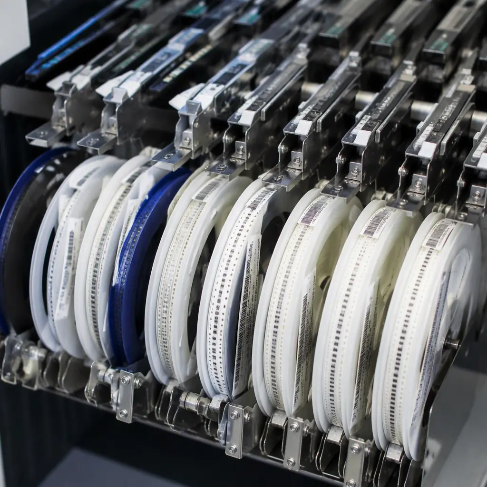
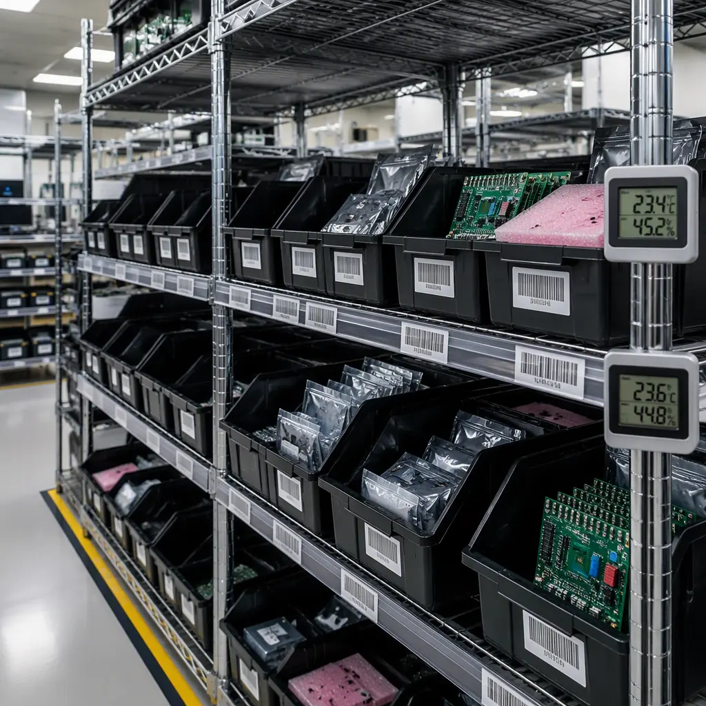

Components represent 60-75% of total PCBA cost. Yet most procurement teams focus their cost-reduction efforts on the PCB fabrication and assembly line items — which together account for just 25-40% — because component pricing feels like an immovable market force. It's not. Across more than 800 production BOMs processed through our Shenzhen facility, we've observed that disciplined BOM cost optimization consistently delivers 12-25% component cost reduction without a single quality incident when the right processes are in place.
The semiconductor shortage of 2021-2023 permanently changed component procurement. Lead times that were once 6-8 weeks stretched to 52 weeks, and the procurement teams that survived learned that single-source BOMs are existential business risk — not just a cost problem. The strategies that emerged from that period — alternate sourcing, lifecycle-aware BOM design, multi-supplier qualification — are now standard practice for any organization spending more than $500,000 annually on electronic components. Here are the five levers that move the needle.

Lever 1: Alternate Component Sourcing — The 80/20 Rule of BOM Cost
In a typical BOM, 20% of line items account for 80% of total component cost. These are usually microcontrollers, FPGAs, analog front-ends, power management ICs, and connectors. These high-value line items are also where alternate sourcing delivers the largest absolute savings — and where the qualification burden is highest. The key insight: alternate sourcing doesn't mean buying no-name clones. It means identifying pin-compatible, specification-equivalent parts from tier-1 or tier-2 manufacturers that compete with your incumbent supplier.
Identify the Top Cost Drivers First
Sort your BOM by extended cost (unit price × quantity). The top 10-15 line items typically represent 70-80% of total spend. These are your alternate-sourcing candidates. Don't waste time cross-referencing 1-cent resistors — focus engineering effort where the dollars are. For a typical industrial control board with $85 in total component cost, the microcontroller, Ethernet PHY, isolated DC-DC converter, and connectors will represent $55-60 of that total. Finding alternates for just these 4-6 components can reduce BOM cost by $8-15 per board.
Pin-Compatible vs Function-Equivalent — Know the Difference
Pin-compatible alternates drop into the same footprint with zero PCB changes — ideal for cost-reduction on existing production boards. Function-equivalent alternates require a PCB layout change but may offer better pricing or availability. The former saves NRE and requalification cost; the latter can unlock larger savings on new revisions. For power management ICs and op-amps, pin-compatible alternates from second-source manufacturers (TI → Richtek, ADI → 3PEAK) are common. For MCUs and FPGAs, function-equivalent is more realistic but requires firmware porting effort. Our procurement team maintains a database of cross-referenced alternates for the top 500 most-used ICs in production.
Qualify Before You Switch — The Three-Point Validation
Every alternate component must pass three validation gates before entering production: (a) Electrical validation — bench test against the original part's datasheet parameters across temperature range; (b) Assembly validation — confirm the alternate processes identically through your reflow or wave profile without solderability issues; (c) Reliability validation — accelerated life testing or at minimum 500 thermal cycles with post-test electrical verification. Skipping gate (c) is how cost-reduction programs become field-failure programs. For guidance on counterfeit prevention during alternate sourcing, see our counterfeit detection guide.
Procurement Reality: The single largest alternate-sourcing savings we see are on connectors and passives — not ICs. A TE Connectivity connector at $3.85/unit often has a pin-compatible Amphenol or JST equivalent at $1.90-2.40/unit with identical reliability. These line items require zero electrical validation — just mechanical fit check and one solderability test. Yet most BOMs never touch them because "the connector was specified by the mechanical engineer five years ago."
Lever 2: Multi-Supplier Qualification — Price Competition Without Risk
Single-sourcing creates supplier pricing power. Multi-sourcing creates competition. But multi-sourcing only works if both suppliers are qualified before you need them — qualifying a new supplier during an allocation shortage means accepting whatever price they quote. The smart approach is to qualify a second source during normal market conditions, run 5-15% of volume through them as an ongoing audit, and maintain the relationship so it's ready when leverage is needed.

Multi-supplier qualification requires a structured process — otherwise you end up with three "qualified" suppliers who all buy from the same distributor and quote identical prices. The qualification framework should include: direct manufacturer authorization verification, financial health assessment (Dun & Bradstreet or equivalent), and a sample order with incoming inspection against the original component datasheet. For detailed supplier evaluation methodology, see our PCB supplier audit checklist and our guide on supplier financial due diligence.
| Supplier Tier | Typical Savings vs Single-Source | Qualification Effort | Risk Level |
|---|---|---|---|
| Franchised Distributor (Arrow, Avnet, Future) | 5-10% through competitive bidding | Low — manufacturer-authorized, full traceability | Very Low |
| Independent Distributor (Smith, Converge, A2 Global) | 15-30% on allocated/shortage parts | Medium — requires authenticity verification per IDEA-STD-1010 | Medium |
| China-Based Authorized Distributor | 10-20% on Asia-manufactured ICs | Medium — verify franchise certificate with manufacturer | Low-Medium |
| Open Market / Broker | 20-40% on specific line items | High — full incoming inspection with X-ray, decapsulation, electrical test | High |
Lever 3: Lifecycle-Aware BOM Design
A BOM optimized for today's spot-market pricing is a BOM that will be unbuildable in 18 months. Component lifecycle stage — active, NRND (not recommended for new design), or EOL (end of life) — directly impacts long-term cost. An NRND part that costs $2.50 today may cost $18.00 on the broker market in two years, and an EOL part announced six months ago may already be unavailable at any price. Lifecycle-aware BOM design means making sourcing decisions with a 3-5 year production horizon, not just the current quote.
Run Lifecycle Status on Every BOM Line Item
Before approving any BOM for production, check every semiconductor's lifecycle status through the manufacturer's PCN (product change notification) system. NRND parts should trigger an immediate alternate-sourcing project with a target completion date before the manufacturer's last-time-buy window. EOL parts should stop the BOM release entirely — do not design in a part that's already discontinued. Our incoming BOM review flags any component with lifecycle status NRND or worse, and the procurement team provides alternate recommendations within 48 hours. For a complete framework on managing component transitions, see our obsolescence management guide.
Standardize Passive Components Across Products
One of the highest-ROI BOM optimization strategies is passive component consolidation. A company with five products may use seven different 10µF 16V MLCC capacitors in 0805 — each specified by a different engineer on a different design. Standardizing on one or two preferred part numbers across products increases aggregate volume, unlocking volume discount tiers and reducing inventory carrying cost. We've seen companies reduce their passive component SKU count by 40-60% through cross-product BOM analysis, cutting annual passive spend by 8-12% through volume consolidation alone.
Key Metric: Track your BOM health with one number: the percentage of line items on NRND or EOL status. A healthy production BOM has less than 5% NRND and zero EOL. If your number is above 10%, you have a future cost explosion coming — each NRND part that goes EOL during production will cost 3-8× its original price on the broker market. The time to act is now, not when the PCN arrives.
Lever 4: Volume Aggregation and Blanket Order Pricing
Component pricing is highly volume-sensitive. A microcontroller that costs $4.20 at 1,000 units may cost $3.10 at 10,000 units — a 26% reduction on the BOM's single most expensive line item. But few individual products justify 10,000-unit component buys. The solution is volume aggregation: combining the same component across multiple products, across multiple production runs, or across multiple customers into a single procurement action.
Blanket orders are the contractual mechanism for volume aggregation without carrying excess inventory. A 12-month blanket order for 50,000 units of a common MCU — with quarterly releases of 12,500 and monthly delivery schedules — locks in the 50,000-unit price tier while matching cash flow to actual consumption. The supplier gets revenue visibility; you get volume pricing without warehousing 50,000 parts. For turnkey assembly customers, our procurement team aggregates component demand across all active production programs, achieving pricing tiers that individual programs could never reach alone. For a deeper dive into procurement strategies, see our blanket order vs spot buy comparison and our total cost of ownership guide.
Lever 5: Negotiate on Total Landed Cost, Not Unit Price
The component's unit price on a quote is rarely what you actually pay. MOQ premiums, shipping charges, import duties, broker fees, incoming inspection labor, and the carrying cost of buffer stock all add to the total landed cost per component placed on a board. Negotiating on unit price alone creates an illusion of savings while the actual landed cost may be higher due to minimum-order penalties and logistics overhead.
Demand an All-Inclusive Quote
When comparing component quotes, request pricing that includes: unit price at your actual order quantity (not 10× your volume), shipping to your assembly location, any MOQ surcharges or small-order fees, and payment terms (Net 30 vs prepaid changes effective cost by 2-4%). A component quoted at $1.25/unit with $200 shipping and a $150 small-order fee on a 500-unit order has a real unit cost of $1.95 — 56% higher than the quoted price. Our procurement team provides landed cost analysis as part of every quote comparison. For the full framework, see our BOM quote comparison guide and PCB import duty guide.
Implementation Roadmap — Where to Start
BOM cost optimization is not a one-time project. It's a procurement discipline that pays compounding returns. The first pass typically captures the easiest savings — alternate connectors and passives, distributor competitive bidding, lifecycle cleanup. The second pass goes deeper into IC alternates and volume aggregation. By the third pass, you're optimizing at the architecture level — choosing components during design that have built-in alternate sourcing paths and long production lifespans.
| Phase | Activities | Typical Savings | Timeline |
|---|---|---|---|
| Quick Wins (Month 1) | Connector/passive alternates, distributor bid, EOL part flagging | 5-8% | 2-4 weeks |
| Structural (Month 2-3) | IC alternates, multi-supplier qualification, passive standardization | 8-15% cumulative | 6-12 weeks |
| Strategic (Month 4-6) | Volume aggregation, blanket orders, lifecycle-aware BOM redesign | 15-25% cumulative | 3-6 months |
At Huaxing PCBA, our turnkey assembly service includes BOM cost analysis as a standard deliverable — not an upsell. Every BOM we receive goes through alternate sourcing review, lifecycle status check, and landed cost comparison before the first component is ordered. Our procurement team manages over $12 million in annual component spend across certified supplier relationships, and the aggregate volume means our customers access pricing tiers typically reserved for Fortune 500 procurement organizations. Read our complete PCB cost factors guide or submit your BOM for a free cost analysis — typical turnaround is 24 hours.